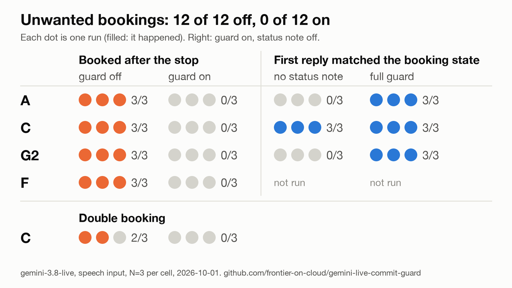

Frontier on Cloud › Tests › gemini-live-commit-guard
A client-side commit guard for in-flight tool calls, before and after
- Model
gemini-3.8-live- Endpoint
- Gemini API (Google AI Studio, API key). Not Vertex AI.
- SDK
google-genai2.25.0, Python 3.13.7- Runs
- 2026-10-01, 08:35 to 08:45 CEST, ablations 08:52 to 08:56 CEST
- Sessions
- 36, speech input: 24 with the guard off and on (4 scenarios, N=3 each), 12 ablations
- Repository
- frontier-on-cloud/gemini-live-commit-guard (MIT), numbers at
20330de - Follows
- What "stop" does to an in-flight tool call
- Part 3, the commit guard and the before/after clip (2026-10-02)
Question
The stop test found that on gemini-3.8-live the client never receives toolCallCancellation, that in the default NON_BLOCKING mode a later "stop" interrupts nothing, that in BLOCKING mode the server drops the pending call and the model may re-issue it with a new id, and that the model's account of the booking can contradict the backend. Can the client handle all of this itself, and which parts of the handling matter?
Setup
- Same system prompt, speech clips, service latency and stop timing as the stop test's speech runs. The clips are macOS
say, voice Samantha, 16 kHz 16-bit mono PCM, streamed in 100 ms chunks in real time, with server voice activity detection at its defaults. - The fake service has two phases:
prepare()does the slow, reversible part (4 s, 7 s in G2),commit()is the instant, irreversible side effect,cancel()releases a job that was not committed. commit_guard.py(one file, about 640 lines) wraps the app's own tool handling. Its four behaviors can be switched off one by one. With the guard off, the job is prepared and committed at once, which is the stop-test baseline.
- Hold on speech onset. After
prepare(), a grace window of 1.5 s. If the user starts speaking (ACTIVITY_START) while a job is pending, the commit is held until that utterance's input transcript arrives, and a keyword check decides: stop, cancel, don't, do not, wait, never mind, hold on. The utterance that triggered the call is checked too. With no transcript 3 s after the later of the speech onset and the moment the commit became due, the job is cancelled. - Deduplicate by business key. The key is the tool name plus the canonical arguments (the slot reduced to day plus 24 h time,
tomorrow 15:00). A call whose key matches a job from the last 30 s is not executed; it is answered with that job's result. - Status note. After a cancel decision, or a commit that happened despite a stop, the guard sends the model a user turn with
send_client_content(..., turn_complete=True), for example "System note: the booking for tomorrow 3pm was cancelled before it was committed. Nothing is scheduled." TheFunctionResponsestill carries the real status. - Abandoned BLOCKING calls. If
interruptedarrives while a BLOCKING call has no response yet, the guard marks the call abandoned, holds the commit and does not answer the dead id. A re-issued call for the same key gets the existing job's status on its live id.
| Scenario | What happens |
|---|---|
| A | Default (NON_BLOCKING); stop clip 1.0 s after the call; 4 s prepare |
| C | BLOCKING; stop clip 1.0 s after the call; 4 s prepare |
| G2 | Follow-up question 0.5 s after the call, so the model speaks while the call is pending; stop clip 1 s into that speech; 7 s prepare |
| F | Stop clip 0.3 s after the end of the booking clip; 4 s prepare |
Unwanted commit: a booking committed after the stop clip had started. Statement consistent: the model's turns after the stop clip, classified from the transcript as "claims booked", "claims not booked" or neither, compared with the fake service; neither counts as inconsistent. The last claim and the first claim are scored separately. The rules were checked by hand on 51 post-stop statements.
Results
Counts are runs out of sessions. "Off, stop test" rescores the stop test's speech sessions (no guard, same prompt, clips, latency and timing) with the same metric code; for C it includes the stop test's re-run.
| Scenario | Guard | Sessions | Unwanted commit | Double booking | Statement consistent (last claim) | First claim consistent | Stop to decision, ms (median, range) | Note cut a started reply |
|---|---|---|---|---|---|---|---|---|
| A | off, stop test | 3 | 3/3 | 0/3 | 3/3 | 3/3 | - | - |
| A | off | 3 | 3/3 | 0/3 | 3/3 | 3/3 | - | - |
| A | on | 3 | 0/3 | 0/3 | 3/3 | 3/3 | 3481 (3479 to 3503) | 1/3 |
| C | off, stop test | 6 | 6/6 | 2/6 | 2/6 | 2/6 | - | - |
| C | off | 3 | 3/3 | 2/3 | 2/3 | 2/3 | - | - |
| C | on | 3 | 0/3 | 0/3 | 3/3 | 3/3 | 3477 (3473 to 3507) | 1/3 |
| G2 | off, stop test | 3 | 3/3 | 0/3 | 3/3 | 3/3 | - | - |
| G2 | off | 3 | 3/3 | 0/3 | 3/3 | 3/3 | - | - |
| G2 | on | 3 | 0/3 | 0/3 | 3/3 | 3/3 | 3466 (3463 to 3466) | 1/3 |
| F | off, stop test | 3 | 3/3 | 0/3 | 3/3 | 3/3 | - | - |
| F | off | 3 | 3/3 | 0/3 | 3/3 | 3/3 | - | - |
| F | on | 3 | 0/3 | 0/3 | 3/3 | 3/3 | 3494 (3469 to 3827) | 0/3 |
With the guard off the model usually said "already made", which was true, so most off runs score as consistent, including the C runs that booked twice. The exceptions are C off run 3 ("The booking was not made." after a commit) and 4 of the 6 stop-test C runs.

results/figures/before-after.png, drawn by make_figure.py.Which behaviors mattered
- Hold prevented all 12 unwanted commits, in three ways. In A and C the stop transcript arrived 4.47 to 4.51 s after the call, 0.47 to 0.51 s after
preparefinished and about 1.0 s before the grace window ran out, so the grace window alone would have held the commit. In G2 the stop transcript arrived 0.67 to 0.68 s after the grace window had ended; only the hold on the open utterance kept the commit back. In F the stop was spoken before the call existed: the server transcribed request and stop as one turn and sentbook_slot1 to 366 ms after that transcript, and the check on the triggering utterance cancelled the job duringprepare. - Dedupe fired once, in C run 2: the model re-issued
book_slotwith a new id in the same millisecond as the stop transcript, astomorrow 3pmwhere the original call hadtomorrow at 3pm, and got the existing job'scancelledstatus. With the guard off, 2 of 3 C runs booked twice; the re-issue came 18 and 279 ms after the stop transcript. - Abandon marked the call abandoned at the stop's onset in every C run where it was on (6 of 6: 3 main runs and 3 no-inject ablation runs), and skipped the response to the dead id. The model re-issued
book_slotin 4 of those 6. Each call the model re-issued got the existing job's status on its live id, and each of those replies was right. - The decision comes late. About 3.5 s after the start of the spoken stop: the 2.2 s utterance, then the input transcript, which arrived in one chunk 1.26 to 1.31 s after the last chunk of the clip.
ACTIVITY_STARTfor the stop came 147 to 248 ms after its first chunk.interim_input_transcriptionnever arrived. toolCallCancellation: 0 of 36 sessions, 0 of 77 counting the stop test.
Ablations
Guard on with one behavior switched off, N=3 each. Compare with the off and on rows above.
| Config | Scenario | Unwanted commit | Double booking | Statement consistent (last claim) | First claim consistent |
|---|---|---|---|---|---|
| no status note | A | 0/3 | 0/3 | 3/3 | 0/3 |
| no status note | C | 0/3 | 0/3 | 3/3 | 3/3 |
| no status note | G2 | 0/3 | 0/3 | 3/3 | 0/3 |
| no hold, no abandon | C | 3/3 | 0/3 | 3/3 | 3/3 |
- No status note. The job was always cancelled before the commit; only the note was missing. In A and G2 (NON_BLOCKING) the
cancelledFunctionResponsewent out 1 to 5 ms after the decision, yet all 6 first replies were false, for example "The booking was already made and cannot be canceled." A second turn corrected each one 2.4 to 4.8 s later. In C the model re-issuedbook_slotin 3 of 3 runs, dedupe answered each new id withcancelled, and all three first replies were right. So in BLOCKING mode the response on the re-issued id carried the status; in NON_BLOCKING mode the note is what made the first reply right. - No hold, no abandon. Abandon had to go too, because in BLOCKING mode it holds the commit on its own. The commit went through in 3 of 3. The note ("System note: booking BK-1001 for tomorrow 3pm is confirmed. The user asked to stop after it was committed. Tell them it is confirmed and offer to cancel it.") went out 1 ms after the stop transcript, and all 3 replies matched the committed state and offered to cancel. The 12 guard-off sessions offered to cancel 0 times, the 15 stop-test sessions twice. In run 3 the model re-issued
book_slot1.32 s after the stop transcript with different arguments (tomorrow at 3 PMandtomorrow 3pm); dedupe answered it withbookedand nothing was booked twice.
The note can cut a reply in half
A note sent with turn_complete=True interrupts a reply already in progress. In 8 of the 12 full-guard runs, interrupted arrived 12 to 78 ms after the note. In 3 runs the model had already emitted text. In C run 3 the reply was split "I have not" / "booked that slot for you." A client that drops its queued audio on interrupted plays only the second half, which says the opposite of the truth. Two options were not tested: send the note only while the model is idle, or carry the status in a FunctionResponse with a scheduling mode.
The clip
prepare finished. The model re-issues book_slot at 8721 ms and dedupe answers cancelled at 8724 ms. The note goes out at 8726 ms, and from 10063 ms the model says "The booking was cancelled and nothing is scheduled." No toolCallCancellation. From results/clip/before-after.mp4, drawn by make_clip.py.Caveats
- Fake service:
prepareis anasyncio.sleep,commitis instant,cancelalways succeeds. A real backend needs its own reservation, expiry and idempotency. The grace window adds 1.5 s to every commit. - Synthetic speech: one voice, one wording per utterance, digital silence, no noise, no echo of the model's own audio. With real microphones
ACTIVITY_STARTcan fire on noise or on the model's own audio; the guard then holds until the transcript and cancels on timeout. - Keyword intent check: "wait, make it 4pm" would cancel the booking.
- The guard treats an
interruptedwithin 1 s of its own note as caused by the note. A real barge-in in that second is caught only by itsACTIVITY_START. - One endpoint and one model: Gemini API with an API key, not Vertex AI, no session resumption.
- N=3 per scenario and mode, on one morning. Live ablations cover only the status note (A, C, G2) and hold plus abandon (C).
- The consistency check reads the transcript, not the audio, and its rules are tuned on 51 statements from this one prompt. What a listener hears was not measured.
- The analysis code changed during the run (claim rules, the cut-reply column); the guard's runtime code did not.
aggregate.pyrecomputes every column from the logged events with the final rules. - A reference pattern, not a library: no package, one model, one prompt, one fake service.
Source and reproduce
| Commit | Date | Contents |
|---|---|---|
20330de | 2026-10-01 | The guard, the harness, the 36 sessions and results/summary.md |
844258b | 2026-10-01 | Before/after figure and its script |
229d944 | 2026-10-02 | Audio capture, the one recorded session for the clip (not counted), the clip |
3dc7491 | 2026-10-03 | README correction: the abandon count is 6 of 6 runs, re-issue in 4 of 6 (it read 9 of 9 and 4 of 9) |
Per-run tables, metric definitions and the rescored stop-test sessions: results/summary.md. Every event and guard decision is in results/<scenario>_<mode>.jsonl.
cp .env.example .env # then set GEMINI_API_KEY in .env
uv sync
./run_guard.sh # A, C, G2, F with the guard on, then off, N=3: 24 sessionsOffline, no key and no network: uv run python -m unittest -v (18 tests that replay recorded timelines). Ablations: ./run_guard.sh A_noinject C_noinject G2_noinject C_nohold_noabandon. Rebuild the summary: uv run aggregate.py.